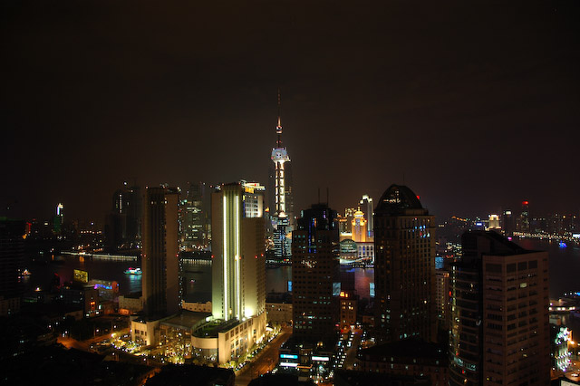
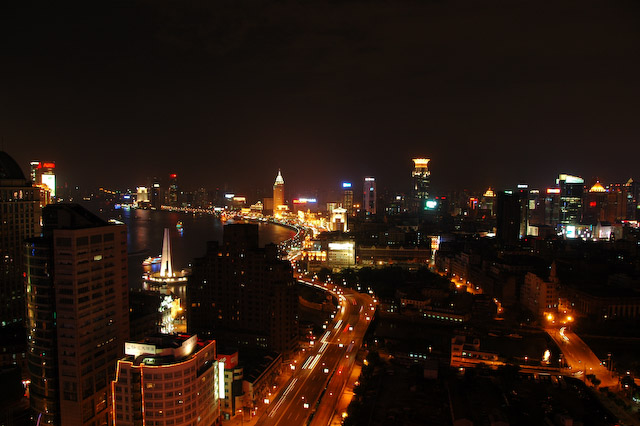
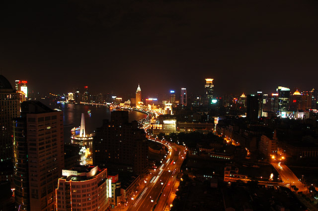

Leider lag unsere Weiterreise nach Shanghai zeitlich etwas ungünstig. Da wir erst Mittags abfliegen sollten, und ein Zwischenstopp in Xi'an anstand, konnten wir erst mit einer frühabendlichen Ankunft rechnen. Leider haben sich alle beteiligten Flugzeuge verspätet. In Xi'an mussten wir eine Stunde auf dem Rollfeld stehen. Daher sind wir erst nach Einbruch der Dunkelheit in Shanghai eingetroffen. Die Temperatur lag aber bei tropischen 33 Grad und die Luftfeuchtigkeit entsprach Regen.
Dafür hat sich die Fahrt vom Flughafen in die Stadt dann um so mehr gelohnt. Nachts wirkt Shanghai tatsächlich wie in Blade Runner. Die unzähligen Hochhäuser sind wild beleuchtet und blinken allesamt. Besonders die Prachtbauten von Pudong und im Zentrum wirken sehr futuristisch. Dazu tragen noch die unglaublichen Autobahnen bei, die nicht nur in die Breite gehen, sondern an Knotenpunkten drei- oder vierstöckig verlaufen. Der Straßenhöhepunkt ist die Auffahrt der Nanpu-Brücke im Süden vom Bund. Dort muss man sich mehrere Windungen einer riesigen Spirale herunterkämpfen, bis man wieder festen Boden unter den Füßen hat.
Wir wurden wieder im Hengsheng Peninsula Hotel untergebracht, das, wie wir feststellen mussten, sehr nah am Bund gelegen ist. Nur der Weg mit dem Auto ist ungemein verwirrend. Auf dem Dach des Hotels haben wir uns einen Cocktail mit Blick auf die nächtliche Skyline gegönnt. Nicht nur der Fernsehturm, die Perle des Orients, mit seiner gigantischen Diskokugel beeindruckt. In alle Richtungen erstreckt sich ein leuchtendes und glitzerndes Meer von Wolkenkratzern.
So gestärkt haben wir uns auf Erkundungstour begeben. Hinter unserem Hotel gelangt man über eine kleine Brücke über den Wusong Fluss zu den Hinterstraßen des Bunds. Noch um 22 Uhr ist die Promenade so voller Menschen, dass man mehr auf seine Füße als auf die Aussicht achten muss. Von dort aus zweigt die berühmte Nanjing Road ab, eine gewaltige Einkaufsstraße. In dieser Straßenschlucht reiht sich ein Geschäft an das nächste. Noch zahlreicher als die Geschäfte sind die Deppen, die falsche Rolex verkaufen wollen.
Nach einigen Stellen, die mit dem Londoner Piccadilly konkurrieren können, mündet die Nanjing Road in den Volksplatz. Dort gibt es ein großes Museum, ein Theater, einen Park, ein Hochhas auf dem ein Ufo gelandet zu sein scheint und Platz für Paraden und andere chinesische Hobbies.
Auf dem Rückweg wollten wir noch einmal am Bund entlang, um
die Skyline etwas ruhiger betrachten zu können. Die Hoffnung,
eine frische Briese in dieser verschwitzten Stadt zu finden,
hatten wir bereits aufgegeben. Zu unserer Überraschung mussten
wir feststellen, dass das allgemeine Leuchtspektakel bereits vor
Mitternacht sein Ende findet. Von Pudong sahen wir nur noch die
Positionsleuchten.

 
